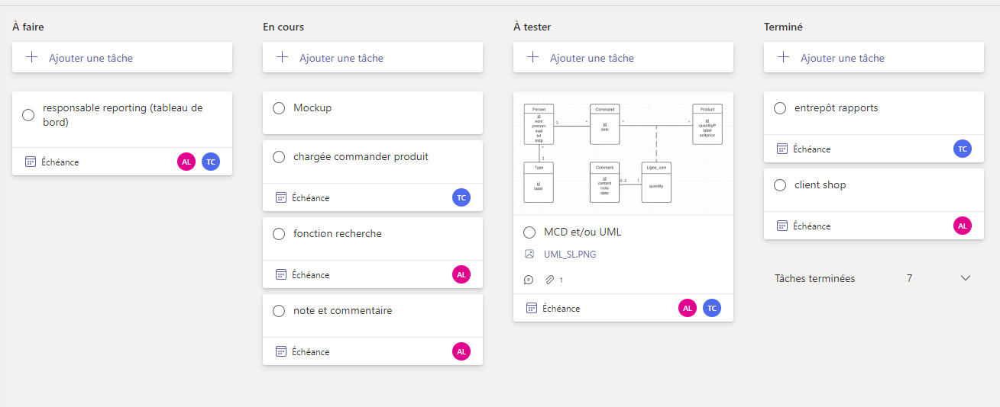
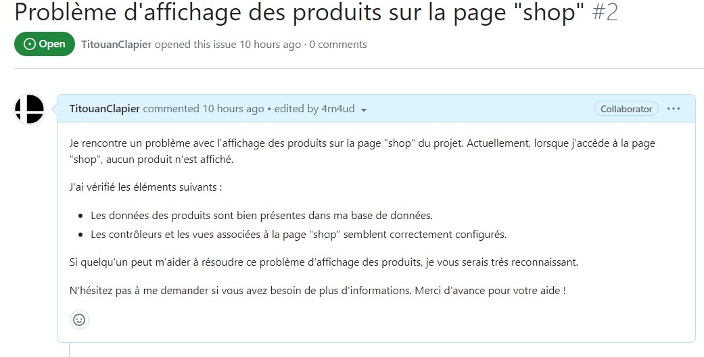

SportLudique
Crée par : Titouan CLAPIER, Arnaud LECHATInformation du projet
- Category: Application Web
- Date du projet: 17/11/2022
- URL du projet: https://github.com/4rn4ud/SportLudique
- Type: projet d'étude
Detail
Languages : PHP, HTML, CSS, Javascript, SQL.
Framework : Symfony.
Librairie : Bootstrap.
API : #.
Outils : Visual studio code, Virtual Box, SQL workbench, Teams, Github.
Contexte donné :
Développement d'un site e-commerce de produits sportifs,
permettant la notation et la recherche de ces mêmes produits.
Les utilisateurs peuvent avoir plusieurs rôles,
notamment celui de recevoir des alertes sur les stocks ou de gérer ces produits.
Compétences utilisées :
Gérer le patrimoine informatique
▸Exploiter des référentiels, normes et standards adoptés par le prestataire
informatique
▸Mettre en place et vérifier les niveaux d’habilitation associés à un service
▸Gérer des sauvegardes
Travailler en mode projet
▸Planifier les activités
▸Évaluer les indicateurs de suivi d’un projet et analyser les écarts
Répondre aux incidents et aux demandes d’assistance et d’évolution
▸Traiter des demandes concernant les applications
Gérer le patrimoine informatique :
Gerer un projet, Collecter, suivre et orienter des demandes, identifier les ressources numériques via le cahier des chargesMise en place et vérification des niveaux d’habilitation associés à un service

Travailler en mode projet :
Planifications des activités et suivi du projet via Teams.
Répondre aux incidents et aux demandes d’assistance et d’évolution:
Mise en place de gestion de version et des issues via Github